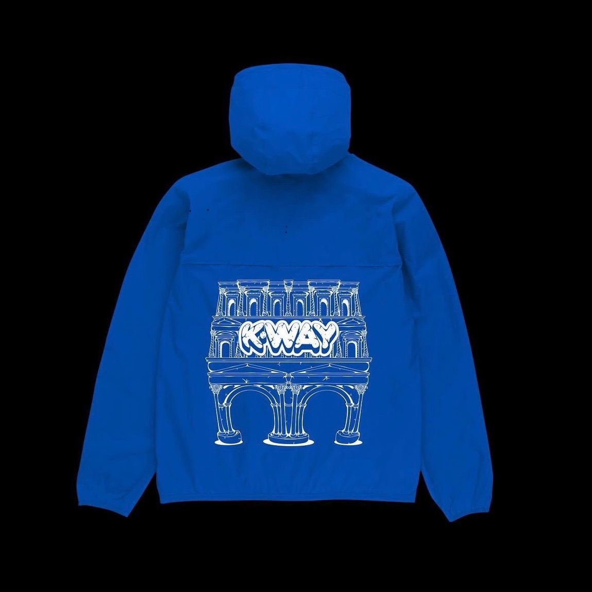
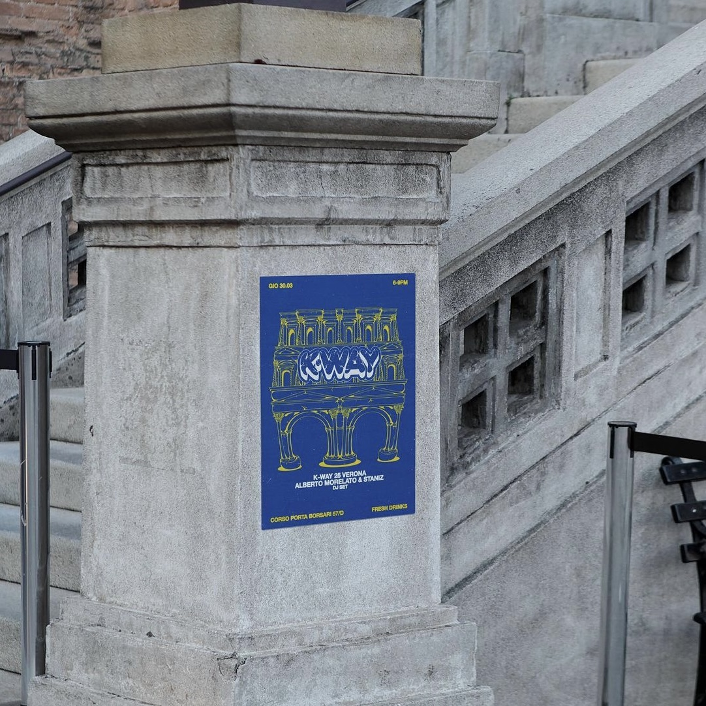
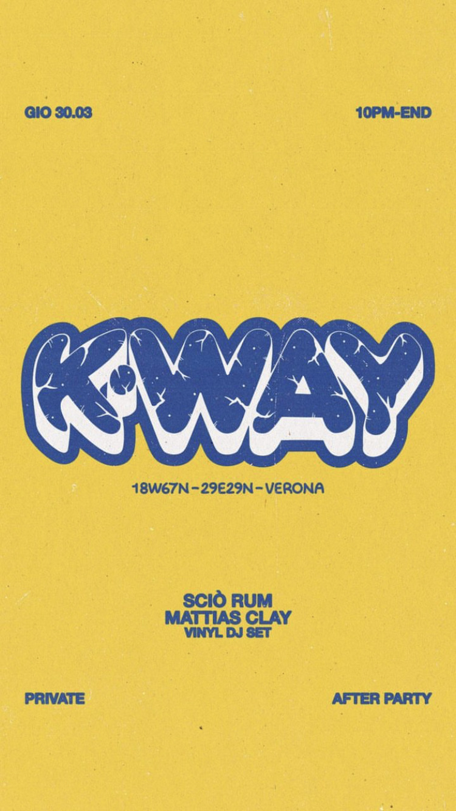
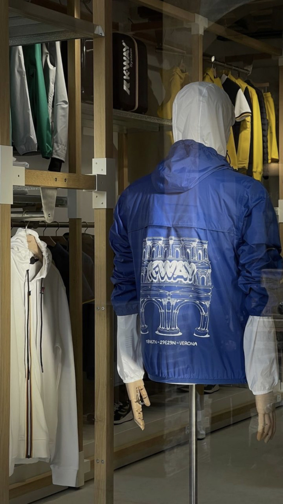
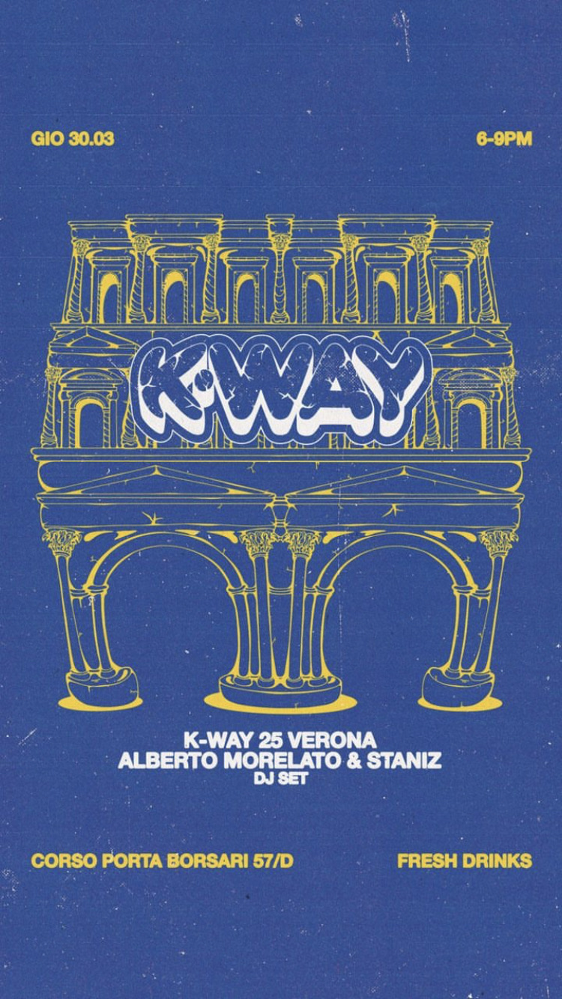
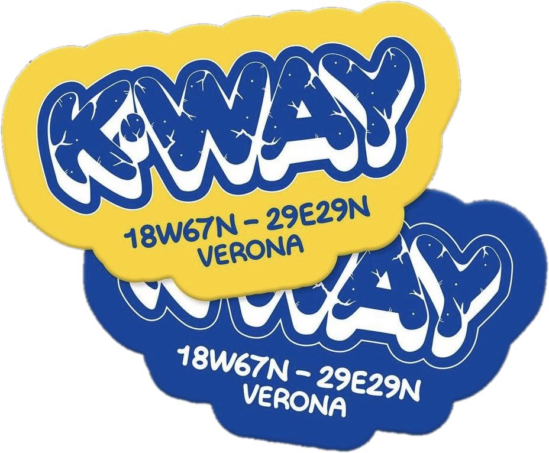
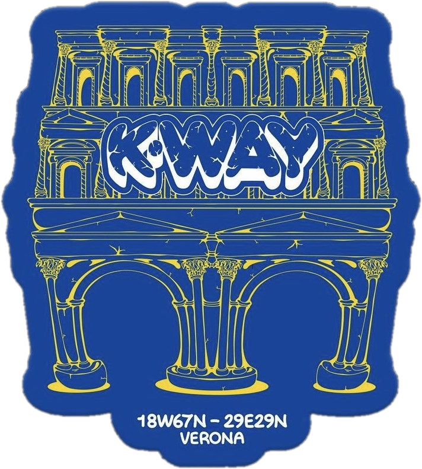

K-Way 25 Porta Borsari, Verona
Campagna ideata per celebrare l'inaugurazione del primo store K-Way in Corso Porta Borsari a Verona.
Per l'occasione ho sviluppato un'illustrazione esclusiva della storica Porta Borsari, l'antica porta romana che dà il nome alla via, e un lettering K-Way gonfio e "bagnato" di pioggia.
Il disegno è diventato il volto di poster, sticker e di un K-Way in edizione limitata, oltre che del flyer per l'after party di inaugurazione.

Sulle strade
di Verona
Giallo e blu, gli stessi colori del lettering, per farsi notare tra le pietre del centro storico: dal flyer per l'after party al poster con la Porta disegnata, affisso a due passi dallo store.


Passa sopra per lo zoom@kway_official, operativi sui social
Il racconto social dell'inaugurazione: prima i tre contenuti di lancio (flyer dell'after party, K-Way in vetrina, flyer dell'opening), poi le stories pubblicate live durante la serata.



La serata, story dopo story
L’artwork non si è fermato alla vetrina, ma ha accompagnato l’intera serata, diventando parte dell’esperienza.
Tra musica, momenti da condividere nelle stories, sticker da prendere e gadget da portare a casa, il progetto ha continuato a vivere anche fuori dallo spazio dell’evento, attraverso gli occhi e i contenuti di chi lo ha vissuto.
Attaccali dove vuoi
Il lettering e la Porta diventano sticker da collezionare, regalati durante l'opening. Prendili, spostali, impilali: sono fatti per questo.


Progetti per il tuo opening?
Lettering, illustrazione e materiali per lanci, store e edizioni limitate.
Scrivimi e disegniamo insieme il prossimo drop.